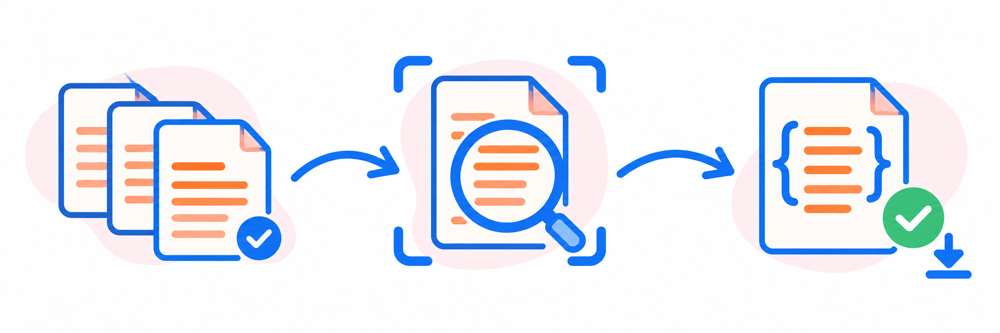
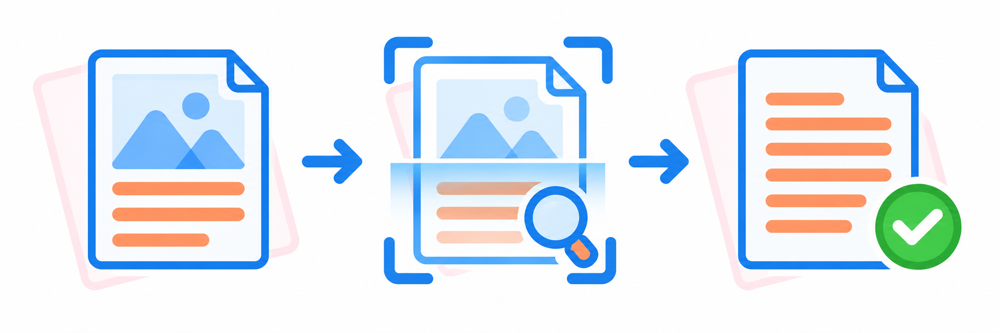

Do PDF ao JSON,
passo a passo.
Extraia informações de documentos administrativos usando o seu navegador. Comece com poucos arquivos para conferir os resultados.
Antes de começar
Tenha os arquivos PDF salvos no computador e mantenha a conexão com a internet para carregar as bibliotecas e os recursos de OCR. Use um navegador atualizado.
Os PDFs são processados localmente no navegador. A hospedagem no GitHub Pages disponibiliza o sistema; os documentos selecionados não são enviados ao GitHub.
Como o Extractron funciona

- 1. SelecionarEscolha o tipo e os PDFs.
- 2. ExtrairO navegador lê e valida os dados.
- 3. BaixarRevise e salve o JSON.
Faça a primeira extração
- Escolha o tipo de documento. Na configuração do processamento, selecione o tipo correspondente, como lei, decreto ou portaria. Use a detecção automática se não souber o tipo ou tiver documentos variados.
- Confira as regras de saída. Ajuste os campos obrigatórios conforme a sua necessidade. Campos exigidos que não forem identificados podem fazer o registro aparecer entre as falhas.
- Ajuste o desempenho, se necessário. A opção “Arquivos por lote” controla quantos PDFs são processados em paralelo. Se o navegador ficar lento, diminua esse valor; para começar, experimente de 1 a 5 arquivos por lote.
- Selecione os PDFs. Clique no botão de seleção de arquivos e escolha um ou mais PDFs. O processamento começa após a seleção, usando as configurações escolhidas.
- Acompanhe o progresso. Aguarde o término mantendo a aba aberta. PDFs com texto selecionável usam leitura nativa; documentos digitalizados podem exigir OCR e levar mais tempo.
- Confira e baixe os resultados. Revise os registros e use os botões de download disponíveis no resumo. Guarde os arquivos JSON antes de fechar ou recarregar a página.
Quando o PDF é uma imagem, entra o OCR

- 1. Página digitalizadaO texto está dentro de uma imagem.
- 2. ReconhecimentoO OCR identifica os caracteres.
- 3. Texto para extraçãoO sistema procura os campos.
Essa etapa é automática quando necessária e pode demorar mais que a leitura de texto nativo. Revise os resultados: a qualidade da digitalização influencia o reconhecimento.
Entenda os resultados
- Documentos válidos: registros que passaram pelas regras de validação configuradas. Confira número, data e descrição antes de importar em outro sistema.
- Falhas: documentos com erro de leitura ou campos que não atenderam às regras. Consulte os detalhes, revise o PDF e tente novamente com o tipo correto.
- Duplicados: arquivos ou registros identificados como repetidos. Confira os detalhes antes de decidir se precisa processá-los novamente.
Os downloads disponíveis dependem do resultado do processamento. O JSON pode ser usado em integrações, como o FORMTRON, conforme o formato esperado pelo sistema de destino.
URL base dos documentos: quando preencher?
Na aba “Integração e links”, preencha “URL base dos documentos” somente se os PDFs já estiverem hospedados em outro endereço e o JSON precisar apontar para eles.
Exemplo: https://seu-servidor.com/documentos/. Termine a URL com /. Deixe o campo vazio para usar apenas o nome do arquivo.
Essa opção monta referências no JSON; ela não envia nem hospeda os PDFs nesse endereço.
Se algo não funcionar
O navegador ficou lento ou parou de responder
Processe menos PDFs por vez e reduza “Arquivos por lote”. O OCR depende da memória e da capacidade do seu dispositivo.
O texto foi reconhecido incorretamente
Use uma digitalização mais nítida, sem cortes e com as páginas na orientação correta. Confira o tipo documental selecionado. Layouts diferentes podem exigir ajustes nas regras de extração.
O sistema ou o OCR não carregou
Confira a conexão e recarregue a página. As bibliotecas externas precisam estar acessíveis; bloqueadores e redes restritas podem impedir o carregamento.
O download não apareceu
Use o botão de download no resumo dos resultados e confira a pasta de downloads do navegador.